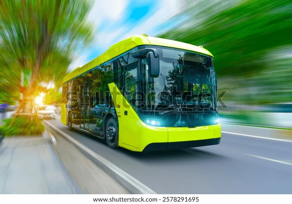

City Council Approves New Green Transit Initiative
Published: November 27, 2025

The City Council voted unanimously late last night to launch a major
new green transit plan, aiming to replace 50% of the city's diesel
bus fleet with electric models over the next five years. This
initiative includes expanding light rail coverage and introducing
subsidized bike-share programs in low-income neighborhoods. Funding
for the project will be secured through a combination of municipal
bonds and federal infrastructure grants. Officials anticipate a
significant reduction in urban smog and carbon emissions as a direct
result of these changes.
Read More »
Local Astronomers Discover Exoplanet in Habitable Zone
Published: November 26, 2025
A team of researchers from the local university observatory
announced the confirmed discovery of a new exoplanet, designated
'Kepler-452f-Prime,' residing within its star's habitable zone. The
planet is estimated to be 1.5 times the size of Earth and is
believed to have a rocky surface and a potentially thick atmosphere.
While initial data is promising, follow-up observations using the
James Webb Space Telescope are scheduled for next year to search for
atmospheric biosignatures. This discovery marks a significant step
in the ongoing quest to find life beyond our solar system.
Read More »
Community Garden Project Breaks Ground Downtown
Published: November 25, 2025

After months of planning and fundraising, the downtown community
garden project officially broke ground earlier today on a previously
unused lot near the central marketplace. Volunteers from several
local organizations came together to begin preparing the soil and
assembling the first set of raised planting beds. The garden is
designed not only to provide fresh produce for the neighborhood food
bank but also to serve as an educational space for local
schoolchildren. Organizers are now seeking donations of tools and
gardening supplies to support the spring planting season.
Read More »